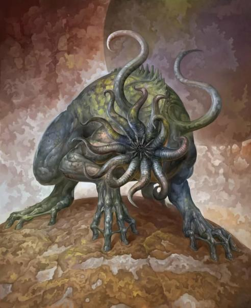

На обратной стороне Луны, всегда скрытой от земного мира, посреди поросших белесыми грибами полей и лесов из причудливых лунных деревьев, на омываемых маслянистыми водами берегах сонного моря разбросаны многочисленные поселения с низкими каменными домами и башнями, лишенными окон. Обитающие в них существа не нуждаются в свете, их безглазые морды оканчиваются клубком розоватых щупалец, а источающие смрад тела с серой склизкой кожей напоминают огромных жаб. Мерзко растягиваясь и сжимаясь, они шествуют в ночных процессиях и воздают почести Ньярлатхотелу, играя на резных флейтах, которые заменяют немым тварям голоса.
Некогда они прибыли на черных галерах в величественный город Саркоманд и поработили его сатироподобных жителей, вытеснив их на ледяное плато Ленг. В его предгорьях ленные жабы возвели каменный монастырь без окон, где на золотом троне восседает Верховный жрец Ньярлатхотеп — одна из серых тварей, закутанная в желтую шёлковую мантию с красными символами. Играя на флейте и стуча в барабан, этот жрец прославляет Иных богов и заставляет сиять зловещий маяк на вершине монастыря, внушая ужас порабощенным обитателям.
Черные галеры также приходят в порты Дийлат-Лина, но лунные твари никогда не покидают их трюмов, используя купцов, скрывающих под вычурными одеждами свой сатироподобный облик. Они обменивают большие рубины на золото и чернокожих рабов. И участь последних незавидна — ведь серые жабы и их мерзкие слуги не прочь полакомиться человечиной, но прежде чем убить несчастных, они пытают и мучают их, наслаждаясь этим.
Впервые упоминаются в повести Г. Ф. Лавкрафта «Сновидческие искания неведомого Кадата» (The Dream-Quest of Unknown Kadath, 1927).
